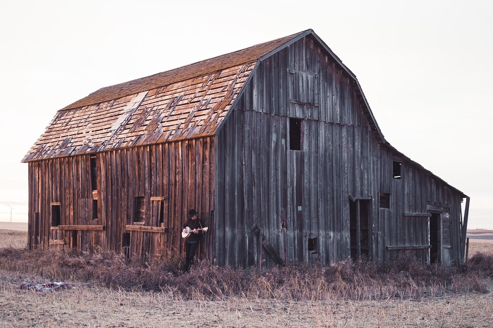
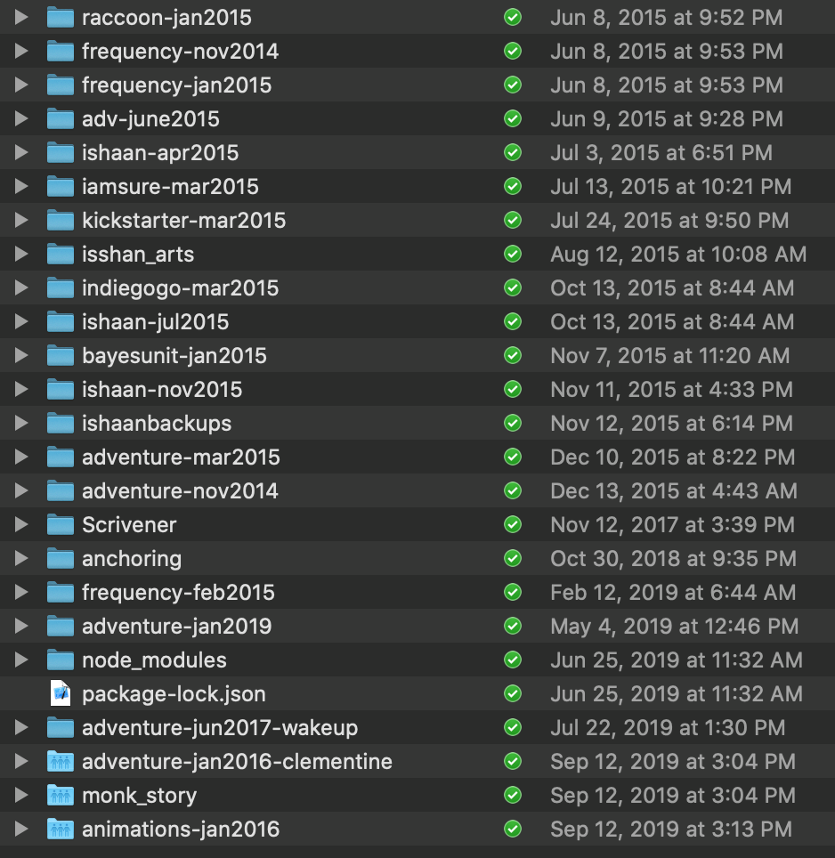

I was stuck on a side project for 5 years. Here’s how I finished it.
A few months ago on /r/DIY, I stumbled upon this post where someone spent 9 years making a shed. No knocks on them, but it’s not even a particularly good-looking shed.
I read the post absolutely transfixed — the shed consumed their free cycles and mind space for 9 years. That’s a significant portion of their lifetime creative output.
The reason I was transfixed is that I have my own “shed”.
shed := a project that has eaten a big chunk of your life, that you no longer enjoy, and that won’t amount to much.
Mine is a story for teaching statistics.
Here is my "finished" shed: Wizard's Guide to Statistics.
Sheds are never finished. You just decide you are done.
Perhaps more importantly, here are my learnings from the shed project.
The main takeaway is that there are life-consuming sheds.
Watch out for projects creeping up in time, until they become a shed. Shed projects seem to start out with an underestimate. You think it’s only going to take a few months, and then it drags into a year. But you acquired some new skills in the meantime, so then you think it’s really just a month more. But then it didn’t pan out the way you envisioned it, so you want to spend a few months redoing it.
Here are all the iterations I’ve spent on my shed. Each time, I thought it was the last iteration I needed.
Cakes are time-bound. You know what you’re making, and you know roughly how long it will take. If you estimate 3 hours to make the cake, and it exceeds your estimate by a little, it’s okay. If you work on a cake for a week, the cake begins to rot. Nobody can work on a cake for 5 years.
Because cakes are time-bound, cakes are small in scope. The small scope means that you get to quickly make a lot of iterations and see what really works. Each iteration is an experiment that provides you with valuable data on what works well. The small scope also makes it easy to follow the advice that a prototype should test exactly one thing.
Cakes have users. If you make a cake, I guarantee there will be someone excited to eat it. If you’re making a cake, you’re really making something that people want. Users offer truly objective data for when the cake is done, good, or what to change if it’s not. Users make design decisions easier.
Cakes are fun to make. The cake is well scoped, the end is in sight, it’s testing a new idea, and you have hope that the end user is really going to enjoy your cake. Cakes are fun! If your project has dragged on so long that it’s no longer fun, perform a shed check.
You can’t go (much) wrong by making a cake.
Unfortunately, I learned about cakes too late. I spent 5 years working on a shed — coding and designing in the absence of users and feedback. At this point, the only way to salvage it is if you eat my shed. Will you please eat my shed? Will you please pass it along to other people who might eat my shed? Will you please turn my shed into a shedcake?
Don't make sheds. You'll have to beg people to eat them.
Kind of. A big project is really a series of small projects.
When I started the shed project, I had the vision that it was going to be grand, epic, yet also intuitive, fun, and playful, as well as a useful and applicable guide to statistics. There were going to be many chapters to cover all the concepts useful to daily life (expected value, variance, common distributions, Central Limit Theorem, Bayes Rule, regression, maximum likelihood, whatever else I’d just learned). As the surface area became larger quality declined, which was demotivating; now I was building a not-very-good thing. And any changes to make it better meant reworking that very large surface area.
I didn’t gather data from the pieces I built out to ensure that it was something compelling to others. Somehow I had deluded myself into thinking it would all come together when it was finished, that the whole would be better than the parts.
Didn’t you get anything out of it?Mainly, I learned how to use UX design and PM principles to make cakes instead of sheds. That’s the subject of a different article.
Can I eat your shed?Thanks Ned Burnell and Jeremy Nixon for helpful suggestions and masterful editing.